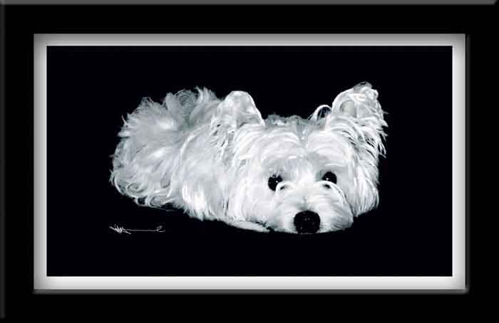

| Ginger. Paintage: watercolor, pastel. The painting was done from my photograph of Ginger taken when she was a couple of months old. She was a much loved West Highland White Terrier, and the painting well shows the jaunty independence of the girl. She had to be put to sleep in her fourteenth year, shortly after this gallery was created. Tears all around. |